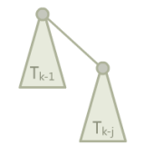

Dsu complexity
本部分内容转载并修改自 时间复杂度 - 势能分析浅谈，已取得原作者授权同意。
这里，先给出 \alpha(n) 的定义。为了给出这个定义，先给出 A_k(j) 的定义。
定义 A_k(j) 为：
即阿克曼函数。
这里，f^i(x) 表示将 f 连续应用在 x 上 i 次，即 f^0(x)=x，f^i(x)=f(f^{i-1}(x))。
再定义 \alpha(n) 为使得 A_{\alpha(n)}(1)\geq n 的最小整数值。注意，我们之前将它描述为 A_{\alpha(n)}(\alpha(n))\geq n，反正他们的增长速度都很慢，值都不超过 4。
基础定义¶
每个节点都有一个 rank。这里的 rank 不是节点个数，而是深度。节点的初始 rank 为 0，在合并的时候，如果两个节点的 rank 不同，则将 rank 小的节点合并到 rank 大的节点上，并且不更新大节点的 rank 值。否则，随机将某个节点合并到另外一个节点上，将根节点的 rank 值 +1。这里根节点的 rank 给出了该树的高度。记 x 的 rank 为 rnk(x)，类似的，记 x 的父节点为 fa(x)。我们总有 rnk(x)+1\leq rnk(fa(x))。
为了定义势函数，需要预先定义一个辅助函数 level(x)。其中，level(x)=\max(k:rnk(fa(x))\geq A_k(rnk(x)))。当 rnk(x)\geq1 的时候，再定义一个辅助函数 iter(x)=\max(i:rnk(fa(x))\geq A_{level(x)}^i(rnk(x))。这些函数定义的 x 都满足 rnk(x)>0 且 x 不是某个树的根。
上面那些定义可能让你有点头晕。再理一下，对于一个 x 和 fa(x)，如果 rnk(x)>0，总是可以找到一对 i,k 令 rnk(fa(x))\geq A_k^i(rnk(x))，而 level(x)=\max(k)，在这个前提下，iter(x)=\max(i)。level 描述了 A 的最大迭代级数，而 iter 描述了在最大迭代级数时的最大迭代次数。
对于这两个函数，level(x) 总是随着操作的进行而增加或不变，如果 level(x) 不增加，iter(x) 也只会增加或不变。并且，它们总是满足以下两个不等式：
考虑 level(x)、iter(x) 和 A_k^j 的定义，这些很容易被证明出来，就留给读者用于熟悉定义了。
定义势能函数 \Phi(S)=\sum\limits_{x\in S}\Phi(x)，其中 S 表示一整个并查集，而 x 为并查集中的一个节点。定义 \Phi(x) 为：
然后就是通过操作引起的势能变化来证明摊还时间复杂度为 \Theta(\alpha(n)) 啦。注意，这里我们讨论的 union(x,y) 操作保证了 x 和 y 都是某个树的根，因此不需要额外执行 find(x) 和 find(y)。
可以发现，势能总是个非负数。另，在开始的时候，并查集的势能为 0。
union(x,y) 操作¶
其花费的时间为 \Theta(1)，因此我们考虑其引起的势能的变化。
这里，我们假设 rnk(x)\leq rnk(y)，即 x 被接到 y 上。这样，势能增加的节点仅有 x（从树根变成非树根），y（秩可能增加）和操作前 y 的子节点（父节点的秩可能增加）。我们先证明操作前 y 的子节点 c 的势能不可能增加，并且如果减少了，至少减少 1。
设操作前 c 的势能为 \Phi(c)，操作后为 \Phi(c')，这里 c 可以是任意一个 rnk(c)>0 的非根节点，操作可以是任意操作，包括下面的 find 操作。我们分三种情况讨论。
- iter(c) 和 level(c) 并未增加。显然有 \Phi(c)=\Phi(c')。
- iter(c) 增加了，level(c) 并未增加。这里 iter(c) 至少增加一，即 \Phi(c')\leq \Phi(c)-1，势能函数减少了，并且至少减少 1。
- level(c) 增加了，iter(c) 可能减少。但是由于 0<iter(c)\leq rnk(c)，iter(c) 最多减少 rnk(c)-1，而 level(c) 至少增加 1。由定义 \Phi(c)=(\alpha(n)-level(c))\times rnk(c)-iter(c)，可得 \Phi(c')\leq\Phi(c)-1。
- 其他情况。由于 rnk(c) 不变，rnk(fa(c)) 不减，所以不存在。
所以，势能增加的节点仅可能是 x 或 y。而 x 从树根变成了非树根，如果 rnk(x)=0，则一直有 \Phi(x)=\Phi(x')=0。否则，一定有 \alpha(x)\times rnk(x)\geq(\alpha(n)-level(x))\times rnk(x)-iter(x)。即，\Phi(x')\leq \Phi(x)。
因此，唯一势能可能增加的点就是 y。而 y 的势能最多增加 \alpha(n)。因此，可得 union 操作均摊后的时间复杂度为 \Theta(\alpha(n))。
find(a) 操作¶
如果查找路径包含 \Theta(s) 个节点，显然其查找的时间复杂度是 \Theta(s)。如果由于查找操作，没有节点的势能增加，且至少有 s-\alpha(n) 个节点的势能至少减少 1，就可以证明 find(a) 操作的时间复杂度为 \Theta(\alpha(n))。为了避免混淆，这里用 a 作为参数，而出现的 x 都是泛指某一个并查集内的结点。
首先证明没有节点的势能增加。很显然，我们在上面证明过所有非根节点的势能不增，而根节点的 rnk 没有改变，所以没有节点的势能增加。
接下来证明至少有 s-\alpha(n) 个节点的势能至少减少 1。我们上面证明过了，如果 level(x) 或者 iter(x) 有改变的话，它们的势能至少减少 1。所以，只需要证明至少有 s-\alpha(n) 个节点的 level(x) 或者 iter(x) 有改变即可。
回忆一下非根节点势能的定义，\Phi(x)=(\alpha(n)-level(x))\times rnk(x)-iter(x)，而 level(x) 和 iter(x) 是使 rnk(fa(x))\geq A_{level(x)}^{iter(x)}(rnk(x)) 的最大数。
所以，如果 root_x 代表 x 所处的树的根节点，只需要证明 rnk(root_x)\geq A_{level(x)}^{iter(x)+1}(rnk(x)) 就好了。根据 A_k^i 的定义，A_{level(x)}^{iter(x)+1}(rnk(x))=A_{level(x)}(A_{level(x)}^{iter(x)}(rnk(x)))。
注意，我们可能会用 k(x) 代表 level(x)，i(x) 代表 iter(x) 以避免式子过于冗长。这里，就是 rnk(root_x)\geq A_{k(x)}(A_{k(x)}^{i(x)}(x))。
当你看到这的时候，可能会有一种“这啥玩意”的感觉。这意味着你可能需要多看几遍，或者跳过一些内容以后再看。
这里，我们需要一个外接的 A_{k(x)}，意味着我们可能需要再找一个点 y。令 y 是搜索路径上在 x 之后的满足 k(y)=k(x) 的点，这里“搜索路径之后”相当于“是 x 的祖先”。显然，不是每一个 x 都有这样一个 y。很容易证明，没有这样的 y 的 x 不超过 \alpha(n)-2 个。因为只有每个 k 的最后一个 x 和 a 以及 root_a 没有这样的 y。
我们再强调一遍 fa(x) 指的是路径压缩 之前 x 的父节点，路径压缩 之后 x 的父节点一律用 root_x 表示。对于每个存在 y 的 x，总是有 rnk(y)\geq rnk(fa(x))。同时，我们有 rnk(fa(x))\geq A_{k(x)}^{i(x)}(rnk(x))。由于 k(x)=k(y)，我们用 k 来统称，即，rnk(fa(x))\geq A_k^{i(x)}(rnk(x))。我们需要造一个 A_k 出来，所以我们可以不关注 iter(y) 的值，直接使用弱化版的 rnk(fa(y))\geq A_k(rnk(y))。
如果我们将不等式组合起来，神奇的事情就发生了。我们发现，rnk(fa(y))\geq A_k^{i(x)+1}(rnk(x))。也就是说，为了从 rnk(x) 迭代到 rnk(fa(y))，至少可以迭代 A_k 不少于 i(x)+1 次而不超过 rnk(fa(y))。
显然，有 rnk(root_y)\geq rnk(fa(y))，且 rnk(x) 在路径压缩时不变。因此，我们可以得到 rnk(root_x)\geq A_k^{i(x)+1}(rnk(x))，也就是说 iter(x) 的值至少增加 1，如果 rnk(x) 没有增加，一定是 level(x) 增加了。
所以，\Phi(x) 至少减少了 1。由于这样的 x 节点至少有 s-\alpha(n)-2 个，所以最后 \Phi(S) 至少减少了 s-\alpha(n)-2，均摊后的时间复杂度即为 \Theta(\alpha(n)+2)=\Theta(\alpha(n))。
为何并查集会被卡¶
这个问题也就是问，如果我们不按秩合并，会有哪些性质被破坏，导致并查集的时间复杂度不能保证为 \Theta(m\alpha(n))。
如果我们在合并的时候，rnk 较大的合并到了 rnk 较小的节点上面，我们就将那个 rnk 较小的节点的 rnk 值设为另一个节点的 rnk 值加一。这样，我们就能保证 rnk(fa(x))\geq rnk(x)+1，从而不会出现类似于满地 compile error 一样的性质不符合。
显然，如果这样子的话，我们破坏的就是 union(x,y) 函数「y 的势能最多增加 \alpha(n)」这一句。
存在一个能使路径压缩并查集时间复杂度降至 \Omega(m\log_{1+\frac{m}{n}}n) 的结构，定义如下：
二项树（实际上和一般的二项树不太一样），其中 j 是常数，T_k 为一个 T_{k-1} 加上一个 T_{k-j} 作为根节点的儿子。

边界条件，T_1 到 T_j 都是一个单独的点。
令 rnk(T_k)=r_k，这里我们有 r_k=(k-1)/j（证明略）。每轮操作，我们将它接到一个单节点上，然后查询底部的 j 个节点。也就是说，我们接到单节点上的时候，单节点的势能提高了 (k-1)/j+1。在 j=\lfloor\frac{m}{n}\rfloor，i=\lfloor\log_{j+1}\frac{n}{2}\rfloor，k=ij 的时候，势能增加量为：
变换一下，去掉所有的取整符号，就可以得出，势能增加量 \geq \alpha(n)\times(\log_{1+\frac{m}{n}}n-\frac{n}{m})，m 次操作就是 \Omega(m\log_{1+\frac{m}{n}}n-n)=\Omega(m\log_{1+\frac{m}{n}}n)。
关于启发式合并¶
由于按秩合并比启发式合并难写，所以很多 dalao 会选择使用启发式合并来写并查集。具体来说，则是对每个根都维护一个 size(x)，每次将 size 小的合并到大的上面。
所以，启发式合并会不会被卡？
首先，可以从秩参与证明的性质来说明。如果 size 可以代替 rnk 的地位，则可以使用启发式合并。快速总结一下，秩参与证明的性质有以下三条：
- 每次合并，最多有一个节点的秩上升，而且最多上升 1。
- 总有 rnk(fa(x))\geq rnk(x)+1。
- 节点的秩不减。
关于第二条和第三条，siz 显然满足，然而第一条不满足，如果将 x 合并到 y 上面，则 siz(y) 会增大 siz(x) 那么多。
所以，可以考虑使用 \log_2 siz(x) 代替 rnk(x)。
关于第一条性质，由于节点的 siz 最多翻倍，所以 \log_2 siz(x) 最多上升 1。关于第二三条性质，结论较为显然，这里略去证明。
所以说，如果不想写按秩合并，就写启发式合并好了，时间复杂度仍旧是 \Theta(m\alpha(n))。
build本页面最近更新：，更新历史
edit发现错误？想一起完善？ 在 GitHub 上编辑此页！
people本页面贡献者：orzAtalod
copyright本页面的全部内容在 CC BY-SA 4.0 和 SATA 协议之条款下提供，附加条款亦可能应用